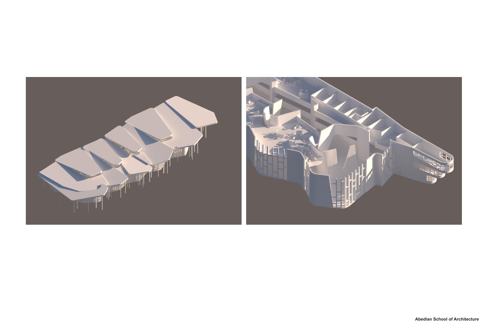
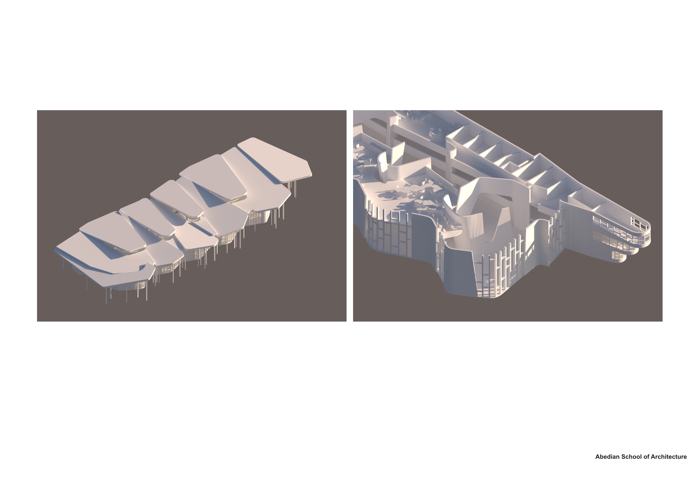

LOADING PROJECT

 



"Future Ruins"
Immersed into the year 2773, the scene of the heart of Los Angeles has fundamentally and irreversibly changed from the way those which walk it today see it. Altercations to the physical and mental landscape thought to be several centuries away have arrived now only a quarter of a millennium later due to the ineptitude of our species to disengage in our selfish habits that have so long threatened the vitality of this entire rock, Earth. The picturesque of California beaches has all fallen to the complete underwater submersion of a new reality founded in disarray.
Following the cyclone of 2772, one so magnificent that any observer could imagine its existence belonging solely to the greatest depths of nightmares, the disparity between those of humans only grew larger as a new world order was establish–one which, in some ways, reverted us back to a more primal living. Initially, those with the wealths to have previously lived lavish lives barricaded themselves away and watched upon the pitted like a life-or-death thriller movie, failing to realize most of their own dawning inability to survive in an unmanufactured world once their paper dissolved away. Some embraced the eternal silence of the water; some prayed for rescue; some even rooted for cleansing. Then, there were those with a will so fiery to survive that they’d do anything to achieve it; there were those who would utilize their bodies as machines in damaging overdrive if it meant even another moment of soul impaction.
Amongst the high rise buildings of Los Angeles are the H3(.0)O Ascenders. The group was founded by an ordinary community of people who were willing to be those machines–although some may consider that in itself extraordinary. Survival instinct fueling their bodily systems day and night; succumbing was never an option to be thought. As the members of the group found themselves swept to site in the infamous LA City Library by random probability, they knew they could not sit as pool toys waiting for automatic solution. Amongst the uncanny scene of a nearly underwater city with some buildings even torn from their foundation and now too floating, the passionate H3(.0)O would attempt and succeed in an unimaginable act for the human scale: in a Godsend occurrence, they rotated one of those floating buildings, Abedian School of Architecture, one-hundred-forty-seven degrees.
The team was fortunate enough to be formed of diversely skilled people who were able to predict how and when to rotate the building over the course of an entire month so that, when water level began to recede, the building would come down to the ground while leaning on a still-standing adjacent building, allowing the group to establish a better means to access and infiltrate the higher ground planes of the urban landscape. With water levels on the low in the mid-year, H3(.0)O quickly gathered many resources from the surrounding site to home this building. They found use in every scrap or junk item: fridges filled with waterlogged, molded food became boats; rusted, dented traffic signs were uprooted and placed again as directions for the sanctuary amongst its safety nets and dangerous hallways; TVs installed with window frames playing motions of the previous world provided twisted sanity to those losing their own; and, most importantly, absolute garbage used to aid in their quest to ascend the building.
Now, in February of 2773, eight months later, all of the original members of H3(.0)O have vanished. A new era of members under the facade of that title inhabit the building, erecting vigils and prayer for their lost ones and those lost ones. Many seek refuge in the lower elevations of the tilted tower, fearing to venture higher up; they have been secured into a falsity of safety within the less unstable walls, despite threats from the greatly fluctuating water levels each shivering night. And, just like before, there are a handful of those who are either curious, stupid, or brave enough to seek out what the heights of this leaning building has to offer, and what the precursors of this new world have left them to explore.
Click to view full description
SCI-Arc Visual Studies 3 / April 2023 / with Professors Jennifer Chen Mulan and Kordae Henry and partner Amani Alakeli, and assistance from Caleb Chung